Complex Number and Mathematica
Gauss Plane and Complex Function
settings
(Local) In[1]:= Off[General::spell1]
(Local) In[2]:= Needs["Utilities`MemoryConserve`"]
(Local) In[3]:= $MemoryIncrement = 5000000;
Graphics primitives
(Local) In[4]:= b[x__]:=Map[{Re[#],Im[#]}&,x,{2}]
(Local) In[5]:= bl[x__]:=Map[Line, b[x]]
(Local) In[6]:= c[x__]:=Map[{Re[#],Im[#]}&,Transpose[x],{2}]
(Local) In[7]:= cl[x__]:=Map[Line, c[x]]
Set of Complex Numbers (Lattice on Gauss plane)
(Local) In[8]:= a=Table[N[i/10] + I N[j/10], (* I = Sqrt[-1] *)
{j,0.1,101,10.1/2},{i,0.1,101,10.1/2}];
Function, shows lattice
(Local) In[9]:= plt[clr_,x__]:=
Show[Graphics[{Hue[clr],bl[x]}],
Graphics[{Hue[clr],cl[x]}],
AspectRatio->Automatic,Frame->True]
Show Lattice.
(Local) In[10]:= plt[.75,a]
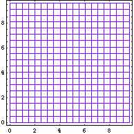
Rotate Lattice
(Local) In[11]:= r=Exp[I Pi *.25] (* I = Sqrt[-1] *)
(Local) Out[11]= 0.707107 + 0.707107 I
(Local) In[12]:= plt[.75,r*a]
(* Rotate of Angle=Pi/4 around zero.
r acts to each element of a *)
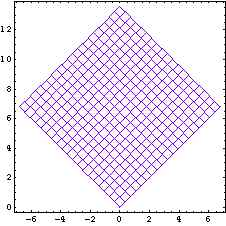
(Local) In[22]:= plt[.75,Conjugate[a]]
(* Conjugate acts to each element of a *)
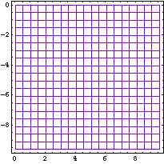
Mapping Lattice
Function acts to each element of List.
(Local) In[39]:= plt[.05,Sin[a]] (* sine function *)
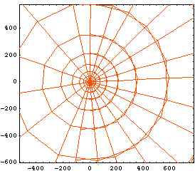
(Local) In[40]:= plt[.9,1/a] (* 1/a is inverse of each element of a *)
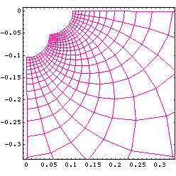
(Local) In[41]:= plt[.76,Zeta[a]] (* Riemann's Zeta function *)
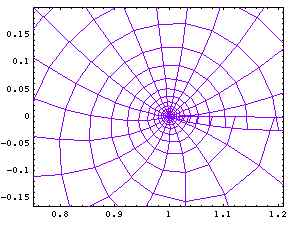
(Local) In[16]:= ?BesselJ
"BesselJ[n, z] gives the Bessel function of
the first kind J(n, z)."
(Local) In[17]:= plt[.75,BesselJ[1,a]]
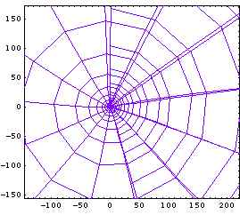
(Local) In[25]:= plt[.75,Sqrt[a]]
(* Square Root of each element of a *)
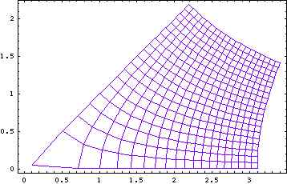
(Local) In[29]:= plt[.5,a^(.5+I)] (* Power by "1/2 + Sqrt[-1]" *)
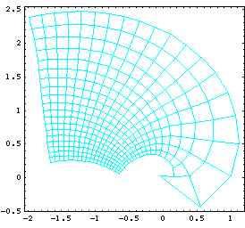
(Local) In[43]:= ?AiryAi
"AiryAi[z] gives the Airy function Ai(z)."
(Local) In[45]:= plt[.5,AiryAi[Evaluate[a/5]]]
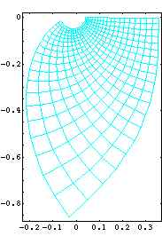
(Local) In[15]:= a1= 4 + 4I
(Local) Out[15]= 4 + 4 I
(Local) In[21]:= a2 = 6 + 7I
(Local) Out[21]= 6 + 7 I
(Local) In[22]:=plt[.25,(a-a1)/(a-a2)]
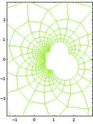
Biblography
Programming in Mathematica Second Edition, R. Maeder, Addison-Wesley, 1991
BACK
Last update on 12/May/2006